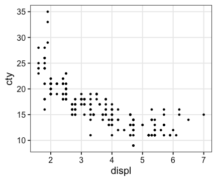
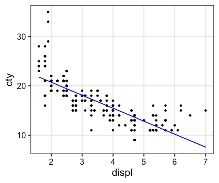
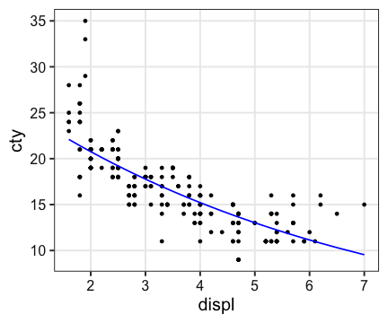
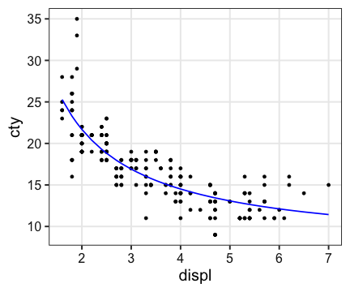

Hands-on R Lecture for Makino Lab
- Why do we use R?
- R basics
- Visualization with R
- Tidying and transforming data with R
- Statistical analysis with R
- File management with Git+GitHub
2019-10-23 生物棟大会議室
Today’s topic
Theoretical background of statistical analysis- How to perform statistical analysis with R
Launch RStudio, and load tidyverse.
library(tidyverse)Relationship between cty (燃費) & displ (排気量)?
ggplot(mpg, aes(displ, cty)) + geom_point()
Basic form
# Get the result as an object
formula = Y ~ X
model_object = model_function(formula, data = MYDATA)
# View its summary
summary(model_object)
# Get the estimated coefficients
coef(model_object)where
DATA: data.frame, e.g.,iris,diamonds,mpgY: response variable (a column inDATA), e.g.,ctyX: explanatory variable (a column inDATA), e.g.,displ
Linear Model (線形モデル)
Estimates the coefficients (係数) and intercept (切片).
$\text{cty} = - 2.63 \times \text{displ} + 25.99$
fit = lm(cty ~ displ, data = mpg)
summary(fit)##
## Call:
## lm(formula = cty ~ displ, data = mpg)
##
## Residuals:
## Min 1Q Median 3Q Max
## -6.3109 -1.4695 -0.2566 1.1087 14.0064
##
## Coefficients:
## Estimate Std. Error t value Pr(>|t|)
## (Intercept) 25.9915 0.4821 53.91 <2e-16 ***
## displ -2.6305 0.1302 -20.20 <2e-16 ***
## ---
## Signif. codes: 0 '***' 0.001 '**' 0.01 '*' 0.05 '.' 0.1 ' ' 1
##
## Residual standard error: 2.567 on 232 degrees of freedom
## Multiple R-squared: 0.6376, Adjusted R-squared: 0.6361
## F-statistic: 408.2 on 1 and 232 DF, p-value: < 2.2e-16
Linear Model (線形モデル)
Estimates the coefficients (係数) and intercept (切片).
$\text{cty} = - 2.63 \times \text{displ} + 25.99$
a = coef(fit)[[1]]
b = coef(fit)[[2]]
ggplot(mpg, aes(displ, cty)) + geom_point() +
geom_abline(intercept = a, slope = b, color = "blue", size = 0.8)Linear Model (線形モデル)
Estimates the coefficients (係数) and intercept (切片).
$\text{cty} = - 2.63 \times \text{displ} + 25.99$
Y = predict(fit)
ggplot(mpg, aes(displ, cty)) + geom_point() +
geom_line(aes(y = Y), color = "blue", size = 0.8)
Linear Model (線形モデル)
Estimates the coefficients (係数) and intercept (切片).
$\text{cty} = - 2.63 \times \text{displ} + 25.99$
ggplot(mpg, aes(displ, cty)) + geom_point() +
stat_smooth(method = lm, formula = y ~ x, se = FALSE)Genaralized Linear Model (一般化線形モデル)
formula: linear predictor (線形予測子), e.g.,cty ~ displfamily: error structure (誤差構造), e.g.,gaussian,poisson,Gammalink: link function (リンク関数), e.g.,"identity","log","inverse"
LM is a special case of GLM: glm(..., family = gaussian("identity"))
Genaralized Linear Model (一般化線形モデル)
$\log(\text{cty}) = -0.0155 \times \text{displ} + 3.344$
fit = glm(cty ~ displ, data = mpg, family = Gamma(link = "log"))
summary(fit)##
## Call:
## glm(formula = cty ~ displ, family = Gamma(link = "log"), data = mpg)
##
## Deviance Residuals:
## Min 1Q Median 3Q Max
## -0.40399 -0.08744 -0.01253 0.07447 0.55328
##
## Coefficients:
## Estimate Std. Error t value Pr(>|t|)
## (Intercept) 3.344162 0.027644 120.97 <2e-16 ***
## displ -0.155497 0.007464 -20.83 <2e-16 ***
## ---
## Signif. codes: 0 '***' 0.001 '**' 0.01 '*' 0.05 '.' 0.1 ' ' 1
##
## (Dispersion parameter for Gamma family taken to be 0.02166931)
##
## Null deviance: 14.4350 on 233 degrees of freedom
## Residual deviance: 4.8065 on 232 degrees of freedom
## AIC: 1069.3
##
## Number of Fisher Scoring iterations: 5
Genaralized Linear Model (一般化線形モデル)
$\log(\text{cty}) = -0.0155 \times \text{displ} + 3.344$
ggplot(mpg, aes(displ, cty)) + geom_point() +
geom_line(aes(y = exp(predict(fit))), color = "blue", size = 0.8)
Genaralized Linear Model (一般化線形モデル)
$(\text{cty})^{-1} = 0.010 \times \text{displ} + 0.027$
fit = glm(cty ~ displ, data = mpg, family = Gamma(link = "inverse"))
summary(fit)##
## Call:
## glm(formula = cty ~ displ, family = Gamma(link = "inverse"),
## data = mpg)
##
## Deviance Residuals:
## Min 1Q Median 3Q Max
## -0.38558 -0.08389 -0.01432 0.06985 0.51518
##
## Coefficients:
## Estimate Std. Error t value Pr(>|t|)
## (Intercept) 0.026528 0.001471 18.04 <2e-16 ***
## displ 0.010207 0.000461 22.14 <2e-16 ***
## ---
## Signif. codes: 0 '***' 0.001 '**' 0.01 '*' 0.05 '.' 0.1 ' ' 1
##
## (Dispersion parameter for Gamma family taken to be 0.01922307)
##
## Null deviance: 14.4350 on 233 degrees of freedom
## Residual deviance: 4.3425 on 232 degrees of freedom
## AIC: 1045.5
##
## Number of Fisher Scoring iterations: 4
Genaralized Linear Model (一般化線形モデル)
$(\text{cty})^{-1} = 0.010 \times \text{displ} + 0.027$
ggplot(mpg, aes(displ, cty)) + geom_point() +
geom_line(aes(y = 1 / predict(fit)), color = "blue", size = 0.8)
Non-linear Least-Square (非線形最小二乗法)
$\text{cty} = {28.7} / {\text{displ}} + 7.33$
fit = nls(cty ~ k / displ + b, data = mpg, start = list(k = 1, b = 0))
summary(fit)##
## Formula: cty ~ k/displ + b
##
## Parameters:
## Estimate Std. Error t value Pr(>|t|)
## k 28.7243 1.2000 23.94 <2e-16 ***
## b 7.3309 0.4253 17.24 <2e-16 ***
## ---
## Signif. codes: 0 '***' 0.001 '**' 0.01 '*' 0.05 '.' 0.1 ' ' 1
##
## Residual standard error: 2.29 on 232 degrees of freedom
##
## Number of iterations to convergence: 1
## Achieved convergence tolerance: 7.471e-09
Non-linear Least-Square (非線形最小二乗法)
$\text{cty} = {28.7} / {\text{displ}} + 7.33$
ggplot(mpg, aes(displ, cty)) + geom_point() +
geom_line(aes(y = predict(fit)), color = "blue", size = 0.8)
Model comparison
There are many statistics, e.g., AIC, BIC, etc.
fit1 = lm(cty ~ displ, data = mpg) #family = gaussian("identity")
fit2 = glm(cty ~ displ, data = mpg, family = Gamma(link = "log"))
fit3 = glm(cty ~ displ, data = mpg, family = Gamma(link = "inverse"))
fit4 = nls(cty ~ k / displ + b, data = mpg, start = list(k = 1, b = 0))
AIC(fit1, fit2, fit3, fit4)## df AIC
## fit1 3 1109.336
## fit2 3 1069.301
## fit3 3 1045.469
## fit4 3 1055.754
Model comparison
library(MASS)
full_model = glm(cty ~ displ + cyl + drv + class, data = mpg, family = Gamma(link = "inverse"))
stepAIC(full_model)## Start: AIC=943.41
## cty ~ displ + cyl + drv + class
##
## Df Deviance AIC
## <none> 2.6029 943.41
## - displ 1 2.6322 943.90
## - drv 2 2.7778 954.27
## - cyl 1 2.9533 971.19
## - class 6 3.1371 976.80
##
## Call: glm(formula = cty ~ displ + cyl + drv + class, family = Gamma(link = "inverse"),
## data = mpg)
##
## Coefficients:
## (Intercept) displ cyl drvf
## 0.018435 0.002071 0.004419 -0.005448
## drvr classcompact classmidsize classminivan
## -0.001596 0.010735 0.011227 0.017691
## classpickup classsubcompact classsuv
## 0.019051 0.008377 0.016891
##
## Degrees of Freedom: 233 Total (i.e. Null); 223 Residual
## Null Deviance: 14.43
## Residual Deviance: 2.603 AIC: 943.4
tidymodels meta-package
For modeling and statistical analysis that share the underlying design philosophy, grammar, and data structures of the tidyverse.
install.packages("tidymodels")
library(tidymodels)broom package
Transfroms the messy output of R stats functions to tidy data.frames.
Extract results from fit
fit = lm(Sepal.Width ~ Petal.Length + Petal.Width, data = iris)
summary(fit)##
## Call:
## lm(formula = Sepal.Width ~ Petal.Length + Petal.Width, data = iris)
##
## Residuals:
## Min 1Q Median 3Q Max
## -1.06198 -0.23389 0.01982 0.20580 1.13488
##
## Coefficients:
## Estimate Std. Error t value Pr(>|t|)
## (Intercept) 3.58705 0.09373 38.272 < 2e-16 ***
## Petal.Length -0.25714 0.06691 -3.843 0.00018 ***
## Petal.Width 0.36404 0.15496 2.349 0.02014 *
## ---
## Signif. codes: 0 '***' 0.001 '**' 0.01 '*' 0.05 '.' 0.1 ' ' 1
##
## Residual standard error: 0.3893 on 147 degrees of freedom
## Multiple R-squared: 0.2131, Adjusted R-squared: 0.2024
## F-statistic: 19.9 on 2 and 147 DF, p-value: 2.238e-08
Extract results from fit
fit = lm(Sepal.Width ~ Petal.Length + Petal.Width, data = iris)
tidy(fit)## # A tibble: 3 x 5
## term estimate std.error statistic p.value
## <chr> <dbl> <dbl> <dbl> <dbl>
## 1 (Intercept) 3.59 0.0937 38.3 2.51e-78
## 2 Petal.Length -0.257 0.0669 -3.84 1.80e- 4
## 3 Petal.Width 0.364 0.155 2.35 2.01e- 2
Tests 仮説検定
chisq.test()
fisher.test()
kruskal.test()
ks.test()
t.test()
var.test()
wilcox.test()
# etc.See stats package for more details.
Probability distributions 確率分布
# 確率密度関数 (PDF)
dnorm(c(0, 1.96))## [1] 0.39894228 0.05844094
# 累積分布関数 (CDF)
pnorm(c(0, 1.96))## [1] 0.5000000 0.9750021
# 累積分布関数の逆関数
qnorm(c(0.5, 0.975))## [1] 0.000000 1.959964
# 乱数生成
rnorm(4)## [1] -1.1716709 0.5996302 1.0447831 0.6504804
計算機の限界に注意
1 - pnorm(...)やlog(pnorm(...))のほうが直感的に分かりやすいので、
lower.tail = FALSEやlog.p = TRUEは不要なようにも思われるが、
これらの引数で内部処理させたほうが浮動小数点型の限界付近での計算が正確。
# complementary
1 - pnorm(10, 0, 1) # 0
pnorm(10, 0, 1, lower.tail = FALSE) # 7.619853e-24
# log
log(pnorm(10, 0, 1)) # 0
pnorm(10, 0, 1, log.p = TRUE) # -7.619853e-24Discrete 離散
_binom(size, prob)
_geom(prob)
_hyper(m, n, k)
_nbinom(size, prob, mu)
_pois(lambda)
_signrank(n)
_wilcox(m, n)Continuous 連続
_beta(shape1, shape2)
_cauchy(location = 0, scale = 1)
_chisq(df)
_exp(rate = 1)
_f(df1, df2)
_gamma(shape, rate = 1, scale = 1 / rate)
_lnorm(meanlog = 0, sdlog = 1)
_logis(location = 0, scale = 1)
_norm(mean = 0, sd = 1)
_t(df)
_unif(min = 0, max = 1)
_weibull(shape, scale = 1)Reference
caret package
for machine learning
stan package
for Bayesian modeling and inference.